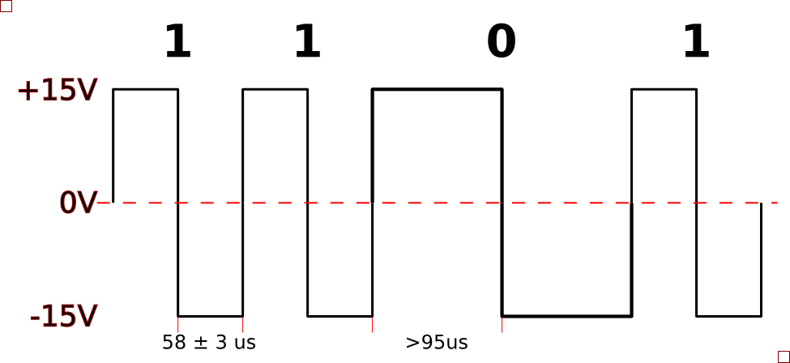
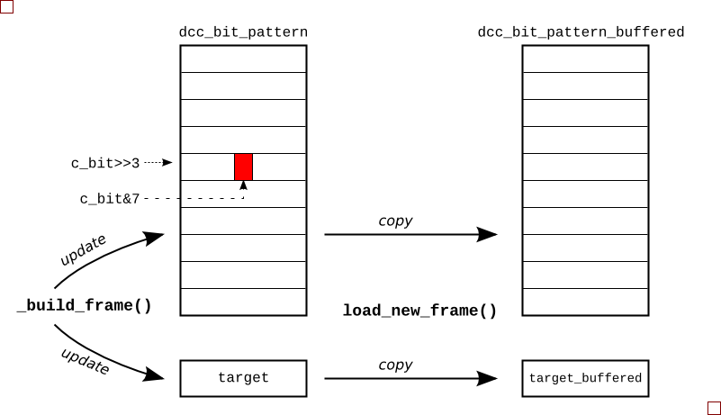
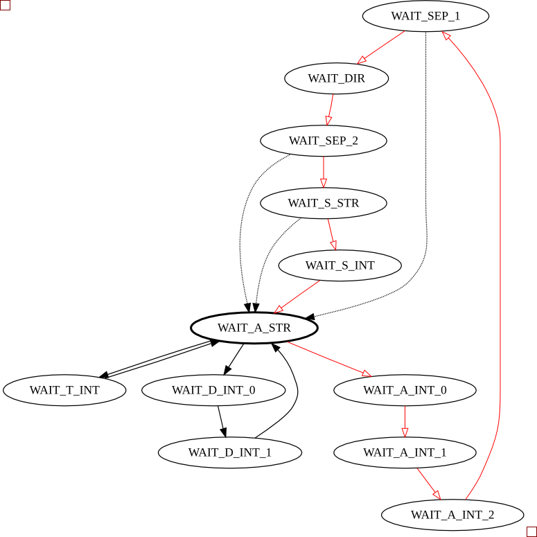

The Arduino firmware I wrote to implement the DCC spec is interesting from two respects: it uses timer interrupts and it writes to the microcontroller ports directly. But I'm getting ahead of myself a little...

These 1's and 0's are then collected into packets and transmitted on to the rails. Each packet contains (at least):
digital_write() to set pin states for two reasons: it can only change one pin at a time; and it's too slow.
So I needed to directly manipulate the a microcontroller digital port. I chose pins 11 and 12 which are both in PORTB. By directly manipulating PORTB with a macro, I could now change the pins at the same instant in time.
#include <avr/io.h> #define DRIVE_1() PORTB = B00010000 #define DRIVE_0() PORTB = B00001000
When to use these macros was the next problem.
1, I would drive LO HI, and I'd drive LO LO HI HI to transmit a 0. The timer setup routine is shown below.
void configure_for_dcc_timing() {
/* DCC timing requires that the data toggles every 58us
for a '1'. So, we set up timer2 to fire an interrupt every
58us, and we'll change the output in the interrupt service
routine.
Prescaler: set to divide-by-8 (B'010)
Compare target: 58us / ( 1 / ( 16MHz/8) ) = 116
*/
// Set prescaler to div-by-8
bitClear(TCCR2B, CS22);
bitSet(TCCR2B, CS21);
bitClear(TCCR2B, CS20);
// Set counter target
OCR2A = timer2_target;
// Enable Timer2 interrupt
bitSet(TIMSK2, OCIE2A);
}
The interrupt service routine (ISR) for the timer is shown below. For accurate timing when using a count target for a timer, I have to reset the timer counter straight away. Straight after, I figure out which level I need to drive and drive it. The point is, there's a fixed amount of processor cycles needed from when the ISR fires until I drive the pins. After this, I can be a little more relaxed about anything else I need to do during the ISR, like update the pattern count or load a new frame (explained later).
#include <avr/interrupt.h>
...
ISR( TIMER2_COMPA_vect ){
TCNT2 = 0; // Reset Timer2 counter to divide...
boolean bit_ = bitRead(dcc_bit_pattern_buffered[c_buf>>3], c_buf & 7 );
if( bit_ ) {
DRIVE_1();
} else {
DRIVE_0();
}
/* Now update our position */
if(c_buf == dcc_bit_count_target_buffered){
c_buf = 0;
load_new_frame();
} else {
c_buf++;
}
};

To keep things simple for the interrupt routine, I built a list of highs and lows that must be transmitted for a given packet. Now, each time the ISR fires it just outputs the next level in the list. For example, if I wanted to drive a packet of 1001, I'd actually be driving 12 UIs (LO HI, LO LO HI HI, LO LO HI HI, LO HI) on the pins. So I set up an array of bytes called dcc_bit_pattern to hold this HI LO HI ... sequence. It was sized so that it would hold the worst case packet length, transmitting all 0's.
So after receiving a new direction instruction, I'd determine the frame data and write it to this packet buffer in UI format. All the while, I'd be keeping a count of the number of UIs in the packet, and when I'd finished building the packet, squirrel this final UI count away for use later. To build a packet from the address, speed and direction data, I call build_packet(), which in turn calls a general-purpose packet builder function called _build_packet(), shown next:
void _build_frame( byte byte1, byte byte2, byte byte3) {
// Build up the bit pattern for the DCC frame
c_bit = 0;
preamble_pattern();
bit_pattern(LOW);
byte_pattern(byte1); /* Address */
bit_pattern(LOW);
byte_pattern(byte2); /* Speed and direction */
bit_pattern(LOW);
byte_pattern(byte3); /* Checksum */
bit_pattern(HIGH);
dcc_bit_count_target = c_bit;
};
The byte_pattern() function takes a byte and converts it to a string of UIs. For example, given an address of 12, this is b0000_1010 in binary and the byte_pattern() function would add the UIs {LO LO HI HI, LO LO HI HI, LO LO HI HI, LO LO HI HI, LO HI, LO LO HI HI, LO HI, LO LO HI HI} to the current packet being constructed.
The function byte_pattern() uses bit_pattern() which really does all the donkey work, doing the actual logic-to-UI conversion. Starting at position held in variable c_bit, bit_pattern() will lay down LO HI or LO LO HI HI for each bit and will increment the UI counter c_bit as it goes.
void bit_pattern(byte mybit){
bitClear(dcc_bit_pattern[c_bit>>3], c_bit & 7 );
c_bit++;
if( mybit == 0 ) {
bitClear(dcc_bit_pattern[c_bit>>3], c_bit & 7 );
c_bit++;
}
bitSet(dcc_bit_pattern[c_bit>>3], c_bit & 7 );
c_bit++;
if( mybit == 0 ) {
bitSet(dcc_bit_pattern[c_bit>>3], c_bit & 7 );
c_bit++;
}
}
The position of a given UI in the packet's byte array dcc_bit_pattern is decoded from the UI counter. The three LSBs, c_bit[2:0] is the position within the byte and the remaining LSBs is the byte address. This explains the bitClear(dcc_bit_pattern[c_bit>>3], c_bit & 7 ) stuff that's going on both here and in the ISR.
When the packet is built and the driver interrupt is ready for it, the packet is copied to a buffer area so that a transmitted packet is never updated mid way through being updated. The function load_new_packet() takes care of copying the new UI data and updating the buffered UI target count.
Serial module and a finite state machine (FSM). The FSM detects a string in the form: "A" digit digit digit ":" "F" or "B" ":" "S" digit. If there's a handier way to do this, I'm all ears. The FSM diagram for this is shown below, with the red transitions being the main loop, and the dashed transistions being followed when there's an error. I snuck a few testmodes in there too: one so I could drive the rails constantly long enough to put a multimeter on them; and another to tweak the timer target count.

Having the firware controlled by strings passed through the serial port opens up some interesting capabilities. For instance, I didn't know the address of the train initially, so I wrote small Python script to cycle through all the addresses and wait a while to see if the train responded (it turned out to be '1'):
#! /usr/bin/env python
""" Try to find the address of dad's train... """
from time import sleep
import serial
link = serial.Serial('/dev/ttyUSB0', baudrate=9600, timeout=2)
def search_address():
for address in range(127):
print "Address %03d" % (address)
link.write("A%03d:F:S3" % address )
sleep(10)
if __name__ == '__main__':
search_address()
I also wrote one to move the train back and forth along the track:
#! /usr/bin/env python
from time import sleep
import serial
link = serial.Serial('/dev/ttyUSB0', baudrate=9600, timeout=2)
print "Link:", link
for i in xrange(10):
link.write("A001:F:S5")
sleep(10)
link.write("A001:B:S6")
sleep(14)